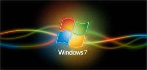

Os desafios de hoje em dia - tal como segurança, conformidade ou a simples capacidade de manter os computadores a funcionar sem problemas - impedem as organizações de beneficiarem plenamente dos investimentos realizados em matéria de recursos humanos e tecnologia.
O Windows 7 não só o ajudará a dar resposta aos desafios de hoje, reduzindo os custos de TI, como irá facilitar a integração da nova tecnologia na metodologia comercial da sua empresa:
Fiabilidade:
O Windows 7 detecta problemas de hardware antes de ocorrerem, reduz a frequência de incidentes em que as aplicações deixam de responder ou o computador tem de ser reiniciado e recupera automaticamente de falhas de arranque e serviço.
Segurança: Maior protecção:
A segurança do Windows 7 proporciona protecção contra a última geração de ameaças, tais como worms, vírus e spyware.
Configuração:
A configuração baseada em imagens torna o Windows 7 mais fácil de implementar do que as versões anteriores do sistema operativo Windows.
Windows 7
O mais rápido sistema Windows de sempre, o Windows 7 inclui funcionalidades de rede e outras que o tornam ideal para utilização profissional pelas empresas e indivíduos.
Para saber preços consulte-nos |